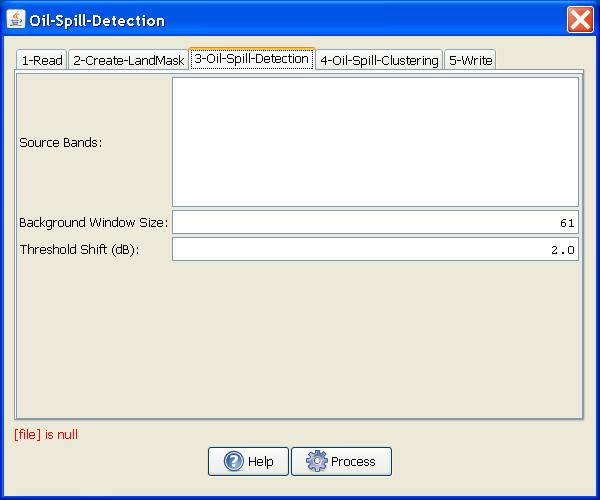
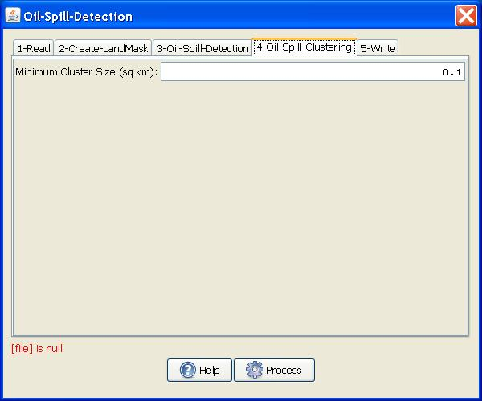

Oil Spill Detection
The operator detects dark spot such as oil spill on sea surface
from SAR imagery.Major Processing Steps
The oil spill detection operation consists of the
following four operations:
- Pre-processing: Calibration is applied to the source image in this
step. Speckle filtering is optional; the menu graph does not include it.
- Land-sea masking: Land-sea mask is created in this step to ensure that
detection is focused only on area of interest.
- Dark spot detection: Dark spots are detected in this step with an
adaptive thresholding method.
- Clustering and discrimination:
Pixels detected as part of the dark spot are clustered and then
eliminated based on the dimension of the cluster and user selected
minimum cluster size.
For details of calibration and speckle filtering operations, the readers are referred to the Calibration operator and the Speckle Filter
operator.
Here it is assumed that the calibration and speckle filtering have
been performed before applying the oil spill detection operator.
For details of land-sea mask generation, the readers are referred to the Create Land Mask operator.
Adaptive Threshold Algorithm
The dark spots are detected using an adaptive thresholding
method.
- First the local mean backscatter level is estimated using
pixels in a large window.
- Then the detecting threshold is set
k decibel below the estimated local mean backscatter level. Pixels
within the window with values lower than the threshold are detected as
dark spot. k is a user selected parameter (see parameter Threshold
Shift below).
- Shift the window to next window position and repeat step 1 and 2.
Discrimination
- First the contiguous detected pixels are clustered into a single cluster.
- Then clusters with their sizes smaller than user selected Minimum Cluster Size are eliminated.
How the sub-steps chain
The menu entry Radar > SAR Applications > Ocean > Oil Spill Detection runs a graph:
Read → Land-Sea-Mask → Calibration → Oil-Spill-Detection →
Oil-Spill-Clustering → Write. The menu graph does not include speckle filtering; add a Speckle Filter
node in the Graph Builder if you want it. It sets the background window to 4.5 km; the operator default is 0.5 km.
Oil-Spill-Clustering has no menu entry of its own.
Step 1: Oil Spill Detection (Oil-Spill-Detection) flags dark pixels.
- The input must be calibrated (32-bit float bands). Sentinel-1 TOPS data must be debursted.
- With no band selected, it uses every band whose unit is intensity.
- The background window is a square of about Background Window Dimension × 1000 / (the smaller of the range
and azimuth pixel spacings) pixels, centred on each pixel in turn.
- A pixel is flagged when its value is below (background mean) / 10k/10, where k is the
Threshold Shift in dB. A negative k is refused.
- Output: the selected bands plus one mask band
<band>_oil_spill_bit_msk per band (1 = dark
spot, 0 = not; 0 is the no-data value). A red overlay mask <band>_oil_spill_bit_msk_detection
is added for display.
Step 2: Oil Spill Clustering (Oil-Spill-Clustering) removes small dark spots.
- It reads every
_oil_spill_bit_msk band and groups touching flagged pixels (including diagonal
neighbours) into clusters.
- The minimum size in pixels is Minimum Cluster Size × 106 / (range pixel spacing
× azimuth pixel spacing) + 1. Clusters with fewer pixels are set to 0; the others keep the value 1.
- It does not merge nearby clusters. The other bands pass through unchanged, and the overlay mask is added
again.
Visualize Detected Oil Spill
The oil spill detection bit
mask is output as a separated band. To view the oil spill detection
results, the following steps should be followed:
- Bring up the image.
- Go to Layer Manager and add the oil spill bit mask band as a
layer.
Parameters Used
For dark spot detection, the following parameters are used (see figure 1):
- Source Bands: All bands (real or virtual) of the source product.
User can select one or more bands for oil spill detection. If
no bands are selected, all bands whose unit is intensity are used.
- Background Window Dimension (km): The size of the window, in kilometres (default 0.5 km), used for computing the local mean backscatter level.
- Threshold Shift (dB): The detecting threshold is lower than the local mean backscatter level by this amount.

Figure 1. Oil Spill Detection Operator dialog box.
For clustering and discrimination, the following parameters are used (see Figure 2):
- Minimum
Cluster Size: The minimum cluster size in square kilometer.
Cluster with size smaller than this size is eliminated.

Figure 2. Oil Spill Clustering operator dialog box.
References
- Solberg, A. H. S., Brekke, C., Solberg, R. (2004). Algorithms for oil spill detection in Radarsat and ENVISAT SAR images. Proc. IEEE International Geoscience and Remote Sensing Symposium (IGARSS 2004), vol. 7, 4909–4912. doi:10.1109/IGARSS.2004.1370264
- Solberg, A. H. S., Storvik, G., Solberg, R., Volden, E. (1999). Automatic detection of oil spills in ERS SAR images. IEEE Transactions on Geoscience and Remote Sensing, 37(4), 1916–1924. doi:10.1109/36.774704
- Brekke, C., Solberg, A. H. S. (2005). Oil spill detection by satellite remote sensing. Remote Sensing of Environment, 95(1), 1–13. doi:10.1016/j.rse.2004.11.015
Processing parameters (reference) — Oil-Spill-Clustering
GPT operator: Oil-Spill-Clustering. Generated from the operator source; parameter names are those used in GPT and graph XML.
| Parameter | Type | Default | Allowed values | Unit | Description |
|---|
minClusterSizeInKm2 | double | 0.1 | | | Minimum cluster size |
Processing parameters (reference) — Oil-Spill-Detection
GPT operator: Oil-Spill-Detection. Generated from the operator source; parameter names are those used in GPT and graph XML.
| Parameter | Type | Default | Allowed values | Unit | Description |
|---|
sourceBands | String[] | | | | The list of source bands. |
backgroundWindowDim | double | 0.5 | | | Background window dimension (km) |
k | double | 2.0 | | | Threshold shift from background mean |
Background
Prerequisites
- Calibrated product; a Sentinel-1 TOPS product must already be debursted.
- At least one intensity band.
Next step
- Oil Spill Clustering (removes clusters smaller than the minimum cluster size)
- Export or analyse the result